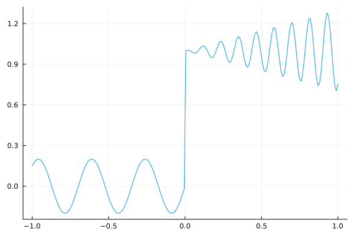
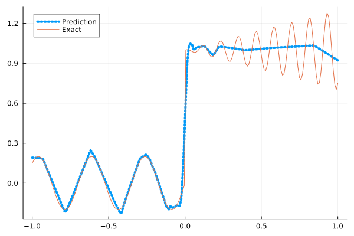
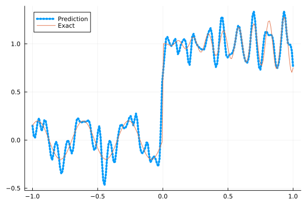
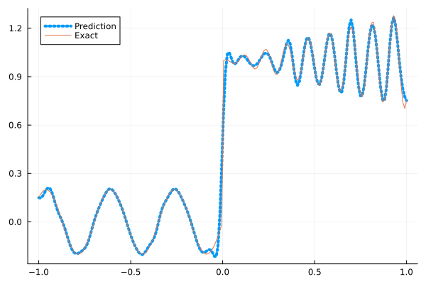
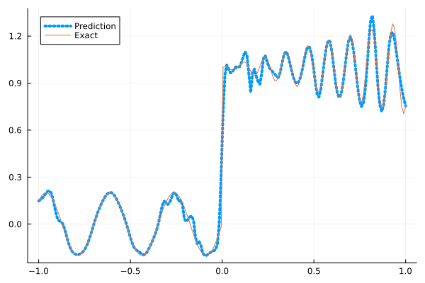
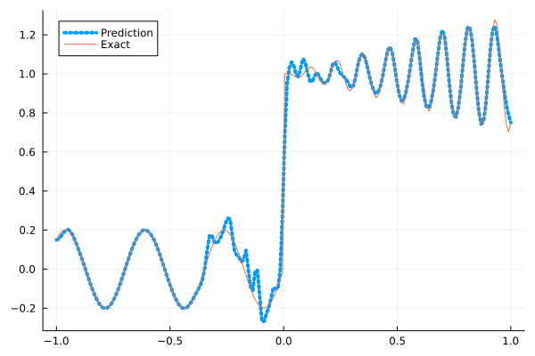

Fitting a nonlinear discontinuous function
This example is taken from here. However, we do not use adaptive activation functions. Instead, we show that using suitable non-parametric activation functions immediately performs better.
Consider the following discontinuous function with discontinuity at $x=0$:
\[u(x)= \begin{cases}0.2 \sin (18 x) & \text { if } x \leq 0 \\ 1+0.3 x \cos (54 x) & \text { otherwise }\end{cases}\]
The domain is $[-1,1]$. The number of training points used is 50.
Import pacakges
using Lux, Sophon
using NNlib, Optimisers, Plots, Random, StatsBase, ZygoteDataset
function u(x)
if x <= 0
return 0.2 * sin(18 * x)
else
return 1 + 0.3 * x * cos(54 * x)
end
end
function generate_data(n=50)
x = reshape(collect(range(-1.0f0, 1.0f0, n)), (1, n))
y = u.(x)
return (x, y)
endgenerate_data (generic function with 2 methods)Let's visualize the data.
x_train, y_train = generate_data(50)
x_test, y_test = generate_data(200)
Plots.plot(vec(x_test), vec(y_test),label=false)
Naive Neural Nets
First we demonstrate show naive fully connected neural nets could be really bad at fitting this function.
model = FullyConnected((1,50,50,50,50,1), relu)Chain(
layer_1 = Dense(1 => 50, relu), # 100 parameters
layer_2 = Dense(50 => 50, relu), # 2_550 parameters
layer_3 = Dense(50 => 50, relu), # 2_550 parameters
layer_4 = Dense(50 => 50, relu), # 2_550 parameters
layer_5 = Dense(50 => 1), # 51 parameters
) # Total: 7_801 parameters,
# plus 0 states, summarysize 80 bytes.Train the model
function train(model, x, y)
ps, st = Lux.setup(Random.default_rng(), model)
opt = Adam()
st_opt = Optimisers.setup(opt,ps)
function loss(model, ps, st, x, y)
y_pred, _ = model(x, ps, st)
mes = mean(abs2, y_pred .- y)
return mes
end
for i in 1:2000
gs = gradient(p->loss(model,p,st,x,y), ps)[1]
st_opt, ps = Optimisers.update(st_opt, ps, gs)
if i % 100 == 1 || i == 2000
println("Epoch $i || ", loss(model,ps,st,x,y))
end
end
return ps, st
endtrain (generic function with 1 method)Plot the result
@time ps, st = train(model, x_train, y_train)
y_pred = model(x_test,ps,st)[1]
Plots.plot(vec(x_test), vec(y_pred),label="Prediction",line = (:dot, 4))
Plots.plot!(vec(x_test), vec(y_test),label="Exact",legend=:topleft)Epoch 1 || 0.21956941015520676
Epoch 101 || 0.018127085365467262
Epoch 201 || 0.015916225992367382
Epoch 301 || 0.01522271672652585
Epoch 401 || 0.01462581466672542
Epoch 501 || 0.013838363919308228
Epoch 601 || 0.01300650448033369
Epoch 701 || 0.012596957376321409
Epoch 801 || 0.012218445711231556
Epoch 901 || 0.011640435967489633
Epoch 1001 || 0.010508101539926826
Epoch 1101 || 0.009150840306408548
Epoch 1201 || 0.008206584654807322
Epoch 1301 || 0.007899392076894116
Epoch 1401 || 0.007538311321660978
Epoch 1501 || 0.007423246704833979
Epoch 1601 || 0.0073697791178984765
Epoch 1701 || 0.00734781551174613
Epoch 1801 || 0.007272696202438562
Epoch 1901 || 0.007297461297779386
Epoch 2000 || 0.00744238849762735
12.245931 seconds (17.91 M allocations: 1.648 GiB, 4.09% gc time, 91.19% compilation time)
Siren
We use four hidden layers with 50 neurons in each.
model = Siren(1,50,50,50,50,1; omega = 30f0)Chain(
layer_1 = Dense(1 => 50, sin), # 100 parameters
layer_2 = Dense(50 => 50, sin), # 2_550 parameters
layer_3 = Dense(50 => 50, sin), # 2_550 parameters
layer_4 = Dense(50 => 50, sin), # 2_550 parameters
layer_5 = Dense(50 => 1), # 51 parameters
) # Total: 7_801 parameters,
# plus 0 states, summarysize 88 bytes.@time ps, st = train(model, x_train, y_train)
y_pred = model(x_test,ps,st)[1]
Plots.plot(vec(x_test), vec(y_pred),label="Prediction",line = (:dot, 4))
Plots.plot!(vec(x_test), vec(y_test),label="Exact",legend=:topleft)Epoch 1 || 0.7471629933984394
Epoch 101 || 0.0004089313986496198
Epoch 201 || 5.262405400333523e-6
Epoch 301 || 4.025994783943967e-8
Epoch 401 || 1.3497676204813045e-10
Epoch 501 || 1.0145834147965259e-12
Epoch 601 || 8.408421475165702e-14
Epoch 701 || 2.954814845530561e-14
Epoch 801 || 9.761176690585733e-14
Epoch 901 || 6.290522492675495e-14
Epoch 1001 || 5.3682139134264755e-14
Epoch 1101 || 8.593808853404216e-14
Epoch 1201 || 3.091218238817477e-14
Epoch 1301 || 7.984473660250717e-14
Epoch 1401 || 3.052816616600464e-14
Epoch 1501 || 5.910456822774609e-14
Epoch 1601 || 9.74313155605589e-14
Epoch 1701 || 8.336929098124886e-14
Epoch 1801 || 8.472478190381751e-14
Epoch 1901 || 9.913358941688505e-14
Epoch 2000 || 8.254102351631738e-14
4.905490 seconds (5.87 M allocations: 1.181 GiB, 5.66% gc time, 74.02% compilation time)
As we can see the model overfits the data, and the high frequencies cannot be optimized away. We need to tunning the hyperparameter omega
model = Siren(1,50,50,50,50,1; omega = 10f0)Chain(
layer_1 = Dense(1 => 50, sin), # 100 parameters
layer_2 = Dense(50 => 50, sin), # 2_550 parameters
layer_3 = Dense(50 => 50, sin), # 2_550 parameters
layer_4 = Dense(50 => 50, sin), # 2_550 parameters
layer_5 = Dense(50 => 1), # 51 parameters
) # Total: 7_801 parameters,
# plus 0 states, summarysize 88 bytes.@time ps, st = train(model, x_train, y_train)
y_pred = model(x_test,ps,st)[1]
Plots.plot(vec(x_test), vec(y_pred),label="Prediction",line = (:dot, 4))
Plots.plot!(vec(x_test), vec(y_test),label="Exact",legend=:topleft)Epoch 1 || 1.3525306566478656
Epoch 101 || 0.007735234337324497
Epoch 201 || 0.005427847050496068
Epoch 301 || 0.0037730785805943825
Epoch 401 || 0.002753688481943707
Epoch 501 || 0.002080342928345097
Epoch 601 || 0.0015367980164446254
Epoch 701 || 0.001028296314974292
Epoch 801 || 0.0005689618421613648
Epoch 901 || 0.00025837985339090963
Epoch 1001 || 0.00012712977408186284
Epoch 1101 || 8.36152655862659e-5
Epoch 1201 || 6.532671127486563e-5
Epoch 1301 || 5.469592081610356e-5
Epoch 1401 || 4.756777651274495e-5
Epoch 1501 || 4.252881461445737e-5
Epoch 1601 || 3.881919046656942e-5
Epoch 1701 || 3.5955843627102506e-5
Epoch 1801 || 3.361977166299848e-5
Epoch 1901 || 3.160690934943991e-5
Epoch 2000 || 2.9807920870772324e-5
1.146385 seconds (1.15 M allocations: 891.410 MiB, 6.26% gc time)
Gaussian activation function
We can also try using a fully connected net with the gaussian activation function.
model = FullyConnected((1,50,50,50,50,1), gaussian)Chain(
layer_1 = Dense(1 => 50, gaussian), # 100 parameters
layer_2 = Dense(50 => 50, gaussian), # 2_550 parameters
layer_3 = Dense(50 => 50, gaussian), # 2_550 parameters
layer_4 = Dense(50 => 50, gaussian), # 2_550 parameters
layer_5 = Dense(50 => 1), # 51 parameters
) # Total: 7_801 parameters,
# plus 0 states, summarysize 80 bytes.@time ps, st = train(model, x_train, y_train)
y_pred = model(x_test,ps,st)[1]
Plots.plot(vec(x_test), vec(y_pred),label="Prediction",line = (:dot, 4))
Plots.plot!(vec(x_test), vec(y_test),label="Exact",legend=:topleft)Epoch 1 || 0.31280247962291563
Epoch 101 || 0.005559324477961666
Epoch 201 || 0.004605258540780069
Epoch 301 || 0.002194861050266478
Epoch 401 || 0.000857131056292986
Epoch 501 || 0.00020729603713916502
Epoch 601 || 4.001047110387461e-5
Epoch 701 || 2.2419366778592866e-6
Epoch 801 || 7.568225579199026e-8
Epoch 901 || 5.945505532747658e-8
Epoch 1001 || 0.00016978360852542413
Epoch 1101 || 9.989738612025838e-9
Epoch 1201 || 8.966607942649229e-6
Epoch 1301 || 9.660158097652222e-9
Epoch 1401 || 4.2545409347047316e-6
Epoch 1501 || 0.00011805330760143029
Epoch 1601 || 1.5553716919769867e-8
Epoch 1701 || 3.284878040486693e-5
Epoch 1801 || 2.046975165467311e-9
Epoch 1901 || 1.841408453647533e-6
Epoch 2000 || 2.527135600647536e-5
5.376589 seconds (8.29 M allocations: 1.291 GiB, 5.00% gc time, 76.55% compilation time)
Quadratic activation function
quadratic is much cheaper to compute compared to the Gaussain activation function.
model = FullyConnected((1,50,50,50,50,1), quadratic)Chain(
layer_1 = Dense(1 => 50, quadratic), # 100 parameters
layer_2 = Dense(50 => 50, quadratic), # 2_550 parameters
layer_3 = Dense(50 => 50, quadratic), # 2_550 parameters
layer_4 = Dense(50 => 50, quadratic), # 2_550 parameters
layer_5 = Dense(50 => 1), # 51 parameters
) # Total: 7_801 parameters,
# plus 0 states, summarysize 80 bytes.@time ps, st = train(model, x_train, y_train)
y_pred = model(x_test,ps,st)[1]
Plots.plot(vec(x_test), vec(y_pred),label="Prediction",line = (:dot, 4))
Plots.plot!(vec(x_test), vec(y_test),label="Exact",legend=:topleft)Epoch 1 || 0.6567766069275704
Epoch 101 || 0.007682117125233478
Epoch 201 || 0.006315366141042698
Epoch 301 || 0.005857891277042753
Epoch 401 || 0.0055811124387287634
Epoch 501 || 0.005352462415949691
Epoch 601 || 0.005111267291855722
Epoch 701 || 0.0048524462951969275
Epoch 801 || 0.004563852272449798
Epoch 901 || 0.004255548973419411
Epoch 1001 || 0.003763499276682906
Epoch 1101 || 0.003003052221333001
Epoch 1201 || 0.002218728617331868
Epoch 1301 || 0.0013417060688858274
Epoch 1401 || 0.000652080476514297
Epoch 1501 || 0.00015951105283654098
Epoch 1601 || 2.0384786771629956e-5
Epoch 1701 || 1.7965644398832042e-6
Epoch 1801 || 5.715010072361038e-7
Epoch 1901 || 1.63320018474506e-7
Epoch 2000 || 1.839616613860602e-7
4.197064 seconds (5.24 M allocations: 1.148 GiB, 5.73% gc time, 78.29% compilation time)
Conclusion
"Neural networks suppresse high frequency components" is a misinterpretation of the spectral bias. The accurate way of putting it is that the lower frequencies in the error are optimized first in the optimization process. This can be seen in Siren's example of overfitting data, where you do not have implicit regularization. The high frequency in the network will never go away because it has fitted the data perfectly.
Mainstream attributes the phenomenon that neural networks "suppress" high frequencies to gradient descent. This is not the whole picture. Initialization also plays an important role. Siren mitigats this problem by initializing larger weights in the first layer, while activation functions such as gassian have large enough gradients and sufficiently large support of the second derivative with proper hyperparameters. Please refer to Vincent Sitzmann, Julien Martel, Alexander Bergman, David Lindell, Gordon Wetzstein (2020), Sameera Ramasinghe, Simon Lucey (2021) and Sameera Ramasinghe, Lachlan MacDonald, Simon Lucey (2022) if you want to dive deeper into this.